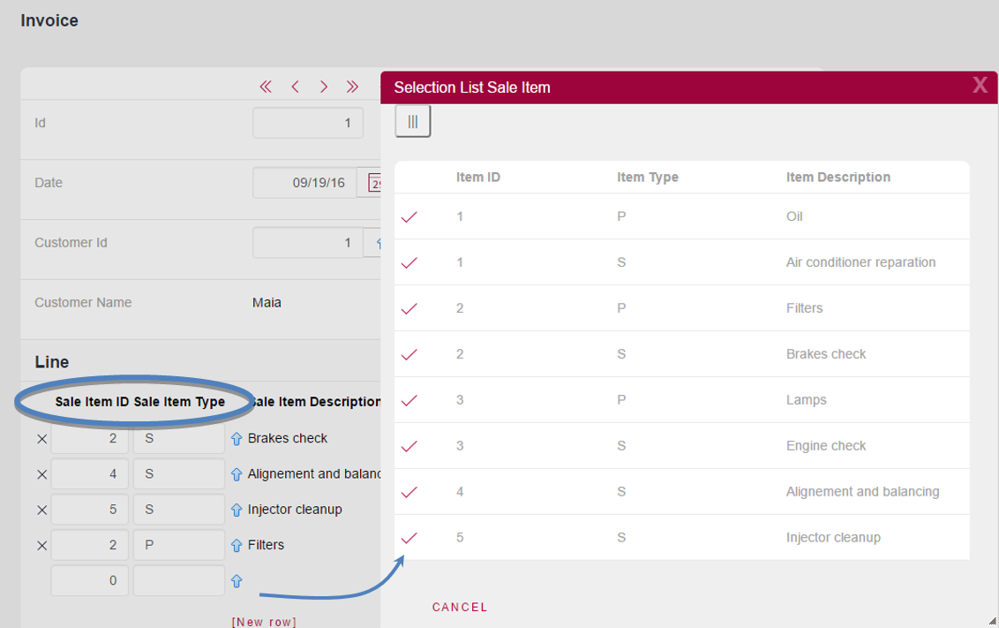

Dynamic Transactions are those Transactions that are defined with the aim of having data queried at runtime (views in the database are created by GeneXus) instead of having associated physical tables.
This kind of definition is very powerful because it offers total flexibility to freely define queries that can be executed not only by executing the Transactions forms but also by making reference to them as Base Transaction in For Each commands, Data Providers and Grids in Web Panels and Panels. In addition to this, it is possible to apply the Work With Patterns to Dynamic Transactions. Furthermore, the Dynamic Transactions attributes can be used as regular attributes in Printblocks, Conditions, etc., in a transparent way regardless of not having neither physical tables nor physical fields associated with these Transactions.
A Transaction is set as Dynamic by setting its object properties:
In consequence of setting the Data Provider property = True, GeneXus automatically creates a Data Provider named TransactionName_DataProvider with its source initialized with the Transaction’s structure, and you only have to complete that initialized source in order to define the desired data to be loaded into the Dynamic Transaction attributes.
As a consequence of setting the Used To = Retrieve Data, GeneXus understands that the Transaction is Dynamic. Therefore, it will not create physical table(s) associated with said Transaction. Instead, GeneXus will create a view in the database.
Suppose that a company sells products and offers services. It could be an automotive company or any other kind of company.
As you can see below, two Transactions have been defined: Product and Service, to record products and services respectively.
Product
{
ProductId*
ProductDescription
ProductStock
ProductExpirationDate
}
Service
{
ServiceId*
ServiceDescription
ServiceHoursDuration
}
There are many ways to model this reality, where a company sells products and services. In this case, it was chosen to define two independent Transactions, to design that they are two different concepts.
The objective is to have together all the data of all the products and services for whatever is needed; for example, to list in alphabetical order all the things (both products and services) the company offers.
To solve the union in a very easy way, our approach is to define a Dynamic Transaction, for example, named SaleItem as shown:
SaleItem
{
SaleItemId*
SaleItemType*
SaleItemDescription
}
Note that the key of the SaleItem Transaction is a compound key. It has been defined this way because our objective is to load, in its attributes, the data of all the products and the data of all the services. So, to be able to coexist products and services with the same identifier value, each sales item has a compound key: SaleItemId*, SaleItemType*, so that we can assign in SaleItemType a “P” for products and an “S” for services as part of the key.
Then, by setting the SaleItem transaction properties:
GeneXus understands that it must not create any physical table associated with that transaction, and creates a Data Provider named SaleItem_DataProvider with its source initialized with the transaction’s structure:
The next step is to complete this Data Provider with the data required to load in the attributes of the SaleItem Transaction:
In the above Data Provider, the code block offered by default was copied and pasted below. In the first code structure, all the Products were retrieved and assigned as Sale items, and in the second one, all the Services were retrieved and assigned as Sale items. Once the SaleItem Transaction is modeled with its associated Data Provider, it’s possible to work on the Transaction, as usual, executing its form and viewing all the sale items and/or referencing it as <base Transaction> and/or naturally using its attributes in other objects.
Look at the following Procedure that prints all the sale items offered by the automotive company ordered alphabetically. You can see that all the concepts are used as usual, despite the fact that the SaleItem Transaction is Dynamic.
As mentioned before, you could choose to define a Web Panel using the Dynamic Transaction attributes as well as apply all the GeneXus features naturally.
Now, suppose that the automotive company has the following requirement: They want only one grid in the invoice’s form when an invoice is entered (they do not want two independent grids with Products in one and Services in the other in the invoice). This can be modeled without any problem since the primary key of a Dynamic Transaction (in this case SaleItemId*, SaleItemType*) can be a foreign key in another Transaction (in the example, in the invoice’s lines):
Invoice
{
InvoiceId*
InvoiceDate
CustomerId
CustomerName
Line
{
SaleItemId*
SaleItemType*
SaleItemDescription
InvoiceLineQuantity
}
}
The following image shows the form of the Invoice Transaction at runtime. Note that the grid contains four sale items (three are services and one is a product). You can also see the selection list of sale items.

Note: This is a small example that does not solve the issue of the prices of products and services. Suppose that prices for products and services are recorded by date respectively and they are obtained in the invoice.
GeneXus creates an SQL View for these Transactions, and usually, the DBMS is capable of deploying a wide array of optimization strategies to ensure good performance.